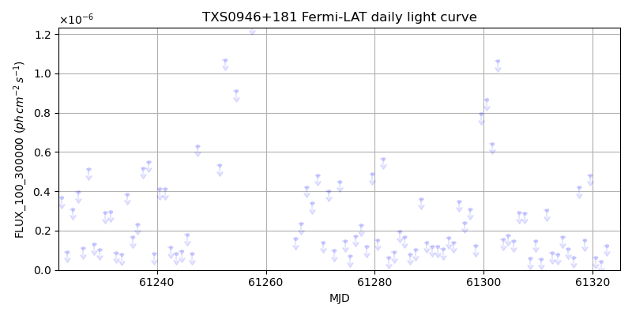
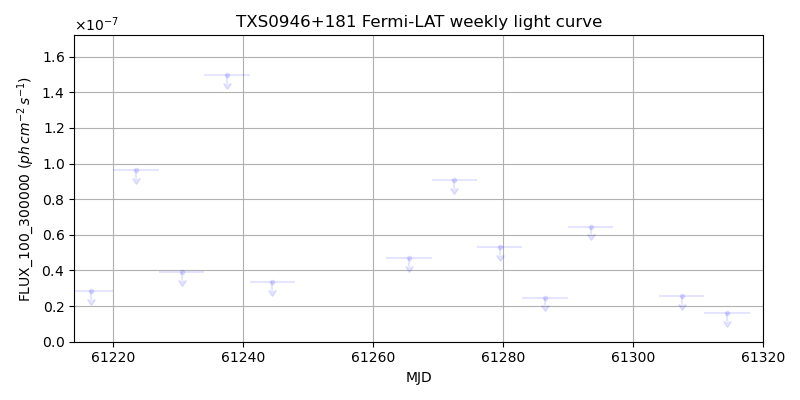
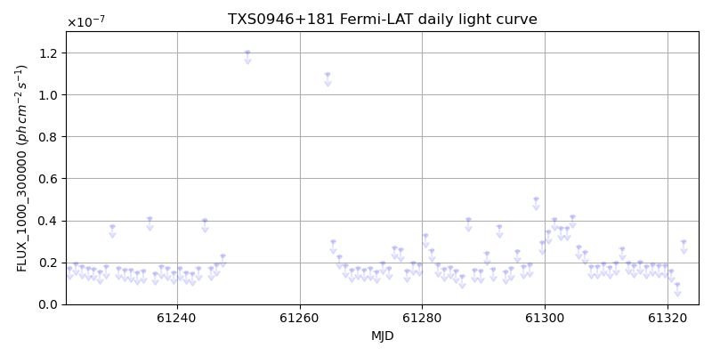
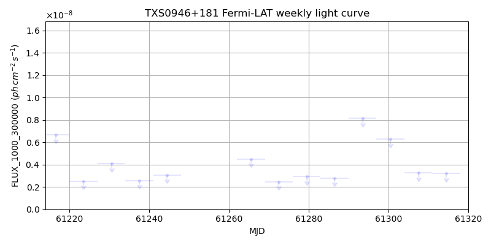

LAT Lightcurve site: https://fermi.gsfc.nasa.gov/ssc/data/access/lat/msl_lc/source/TXS_0946p181
NED: Query
Time of last update of this page: UT: 2026-10-10 15:21 (MJD: 61323.640)
| Property | Value |
|---|---|
| R.A. | 9:49:39.84 |
| Dec. | 17:52:48.0 |
| z | 0.694 |
| 3FGL SpectrumType | |
| 3FGL PL Index | -1.00 |
| 3FGL Flux_100_300000 | -1.00e+00 |
| 3FGL Flux_1000_300000 | -1.00e+00 |
| 3FGL Flux >200 GeV | -1.00e+00 |
| 3FGL Extrap. Crab >200 GeV | -1.00 |
| 3FGL Flux After EBL Absorption >200GeV | -1.00e+00 |
| 3FGL EBL Crab Fraction >200GeV | -1.00 |

| MJD | dMJD | Flux | dFlux | Frac3FGL | FracCrab>200GeV | EBLFracCrab>200GeV |
|---|---|---|---|---|---|---|
| 61318.50 | 0.50 | 1.52e-07 | 0.00e+00 | 0.00 | 0.00 | -0.00 |
| 61319.50 | 0.50 | 4.83e-07 | 0.00e+00 | 0.00 | 0.00 | -0.00 |
| 61320.50 | 0.50 | 6.31e-08 | 0.00e+00 | 0.00 | 0.00 | -0.00 |
| 61321.50 | 0.50 | 4.15e-08 | 0.00e+00 | 0.00 | 0.00 | -0.00 |
| 61322.50 | 0.50 | 1.25e-07 | 0.00e+00 | 0.00 | 0.00 | -0.00 |

| MJD | dMJD | Flux | dFlux | Frac3FGL | FracCrab>200GeV | EBLFracCrab>200GeV |
|---|---|---|---|---|---|---|
| 61286.50 | 3.50 | 2.47e-08 | 0.00e+00 | 0.00 | 0.00 | -0.00 |
| 61293.50 | 3.50 | 6.45e-08 | 0.00e+00 | 0.00 | 0.00 | -0.00 |
| 61300.50 | 3.50 | 2.19e-07 | 0.00e+00 | 0.00 | 0.00 | -0.00 |
| 61307.50 | 3.50 | 2.56e-08 | 0.00e+00 | 0.00 | 0.00 | -0.00 |
| 61314.50 | 3.50 | 1.60e-08 | 0.00e+00 | 0.00 | 0.00 | -0.00 |

| MJD | dMJD | Flux | dFlux | Frac3FGL | FracCrab>200GeV | EBLFracCrab>200GeV |
|---|---|---|---|---|---|---|
| 61318.50 | 0.50 | 1.86e-08 | 0.00e+00 | 0.00 | 0.00 | -0.00 |
| 61319.50 | 0.50 | 1.86e-08 | 0.00e+00 | 0.00 | 0.00 | -0.00 |
| 61320.50 | 0.50 | 1.62e-08 | 0.00e+00 | 0.00 | 0.00 | -0.00 |
| 61321.50 | 0.50 | 9.62e-09 | 0.00e+00 | 0.00 | 0.00 | -0.00 |
| 61322.50 | 0.50 | 3.00e-08 | 0.00e+00 | 0.00 | 0.00 | -0.00 |

| MJD | dMJD | Flux | dFlux | Frac3FGL | FracCrab>200GeV | EBLFracCrab>200GeV |
|---|---|---|---|---|---|---|
| 61286.50 | 3.50 | 2.80e-09 | 0.00e+00 | 0.00 | 0.00 | -0.00 |
| 61293.50 | 3.50 | 8.15e-09 | 0.00e+00 | 0.00 | 0.00 | -0.00 |
| 61300.50 | 3.50 | 6.27e-09 | 0.00e+00 | 0.00 | 0.00 | -0.00 |
| 61307.50 | 3.50 | 3.28e-09 | 0.00e+00 | 0.00 | 0.00 | -0.00 |
| 61314.50 | 3.50 | 3.21e-09 | 0.00e+00 | 0.00 | 0.00 | -0.00 |
--------------------------------------------------------- Using user-supplied coords: 9:49:39.84 17:52:48.0 2000 --------------------------------------------------------- FLWO UT night of: 2026-10-11 Local Sid. @ Midnight: 00:55 Sunset (-15.0) (local, UT): 19:04 02:04 Sunrise (-15.0) (local, UT): 05:18 12:18 Moonrise (local, UT): Moonset (local, UT): Moon phase: 0.01 --------------------------------------------------------- AzTime LSID UT Obj_el Obj_az Mn_el Mn_az Sep. --------------------------------------------------------- 19:04 19:58 02:04 -33.7 327.4 -16.1 264.2 59.1 19:34 20:29 02:34 -36.8 335.4 -22.3 267.8 59.4 20:04 20:59 03:04 -39.0 344.0 -28.5 271.5 59.6 20:34 21:29 03:34 -40.3 353.2 -34.7 275.4 59.9 21:04 21:59 04:04 -40.5 2.6 -40.8 279.7 60.3 21:34 22:29 04:34 -39.7 11.9 -46.8 284.6 60.6 22:04 22:59 05:04 -37.9 20.8 -52.7 290.5 60.9 22:34 23:29 05:34 -35.2 29.0 -58.4 297.7 61.2 23:04 23:59 06:04 -31.8 36.6 -63.6 307.3 61.6 23:34 00:29 06:34 -27.6 43.3 -68.1 320.3 61.9 00:04 00:59 07:04 -23.0 49.4 -71.3 338.2 62.3 00:34 01:29 07:34 -18.0 54.8 -72.6 0.4 62.6 01:04 01:59 08:04 -12.6 59.7 -71.5 22.7 63.0 01:34 02:30 08:34 -6.9 64.2 -68.3 40.8 63.3 02:04 03:00 09:04 -0.4 68.3 -63.9 54.1 63.7 02:34 03:30 09:34 5.1 72.2 -58.7 63.8 64.0 03:04 04:00 10:04 11.2 75.9 -53.1 71.2 64.4 03:34 04:30 10:34 17.4 79.5 -47.3 77.2 64.7 04:04 05:00 11:04 23.7 83.1 -41.4 82.2 65.0 04:34 05:30 11:34 30.1 86.7 -35.3 86.6 65.4 05:04 06:00 12:04 36.5 90.6 -29.2 90.6 65.7 05:18 06:14 12:18 39.3 92.4 -26.5 92.4 65.8 --------------------------------------------------------- Dark hours >55 deg.: 0.00